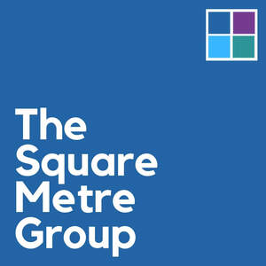

Trade Mark Journal No.2025/049 5 December 2025
UK00004298717 21 November 2025 (41,45)

- Class 41
- Education and training in the field of occupational health and safety; Education and training services in the field of occupational health and safety; Training services relating to health and safety; Training; Education and training; Training services for personnel; Practical training [demonstration]; Staff training services; Training and further training consultancy; Education and training services; Provision of training and education; Provision of education and training; Management training services; Providing of training; Providing training; Training services; Organisation of training seminars; Organising of sports events; Organising community sporting events; Services for the organisation of football events; Organisation of sporting events; Organisation of automobile racing events; Organising events for entertainment purposes; Live demonstrations for entertainment; Entertainment in the nature of live performances by rock groups; Entertainment in the nature of fireworks displays; Organising of audience participative games; Live performances by rock groups; Entertainment in the nature of live performances by musical bands; Night clubs; Presentation of live performances by rock groups; Entertainment by means of concerts; Organising of festivals; Live music concerts; Entertainment in the nature of air shows; Music concerts; Organising of sporting events, competitions and sporting tournaments.
- Class 45
- Safety, rescue, security and enforcement services; Consulting in the field of workplace safety; Health and safety risk management; Occupational safety consultancy; Health and safety risk assessment services; Public events security services; Information services relating to health and safety; Information services relating to safety; Safety evaluation; Advisory services in relation to safety; Consultancy services relating to health and safety.
The Square Metre Group Limited